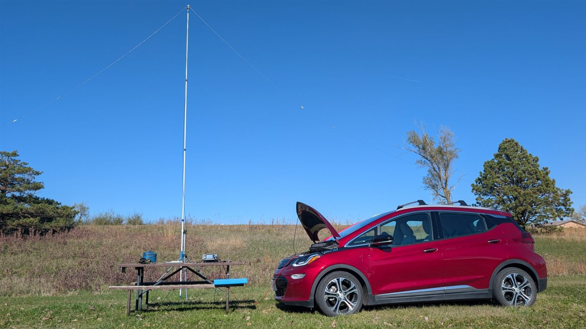

I set up a portable station in a park and try to reach as many other radio operators as I can, across the country and sometimes around the world. It's science, geography and a picnic all at once.

Parks on the Air is an amateur radio program. Thousands of parks each have a reference number, and operators either go to a park or call the people who did.
The operator in the park. That's me, with whatever kids came along.
Operators at home or on the road who call in to contact the park.
Ten or more contacts from one park in one day. Every contact goes in the log.
The least-activated parks within driving distance of Lincoln, with distance rings, filters and directions.
Color in every state we reached during an activation, so kids can see where we talked to people.
New to POTA? The official site, pota.app, lists every park and who's on the air right now.